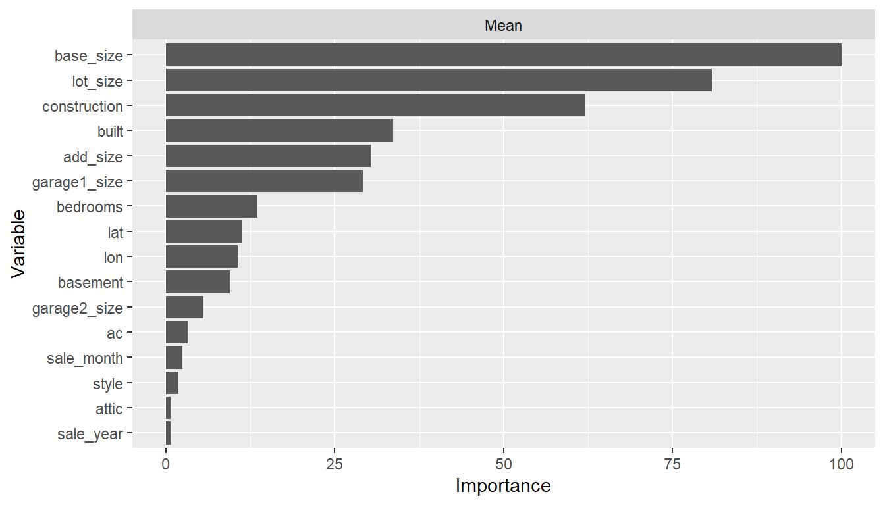
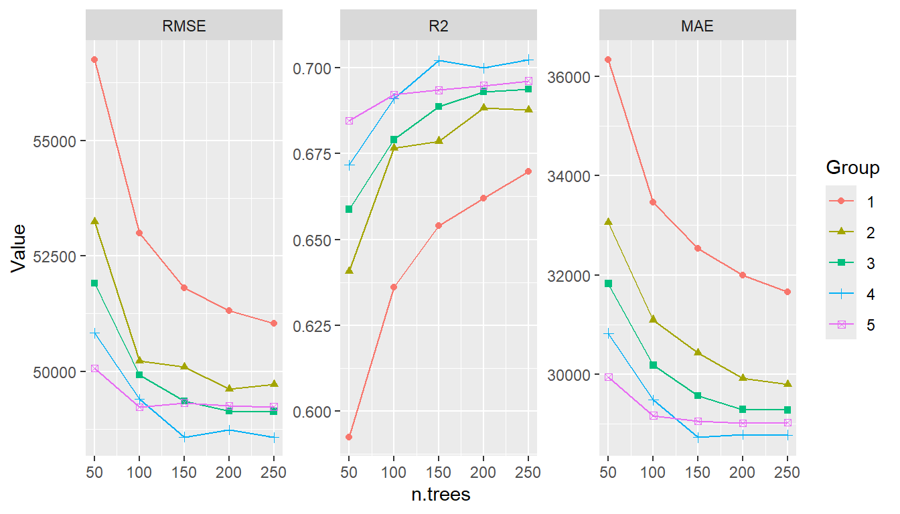
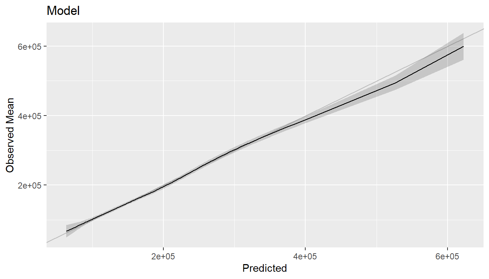
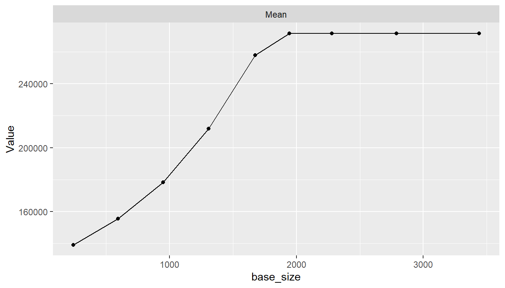
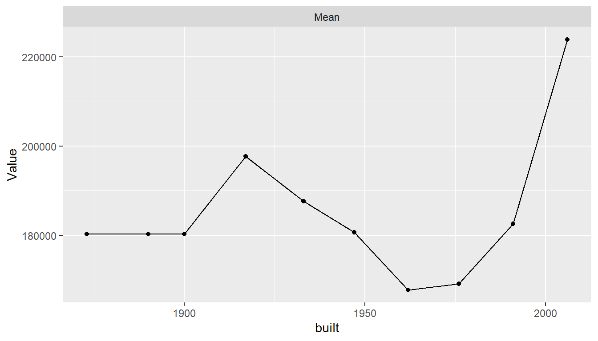
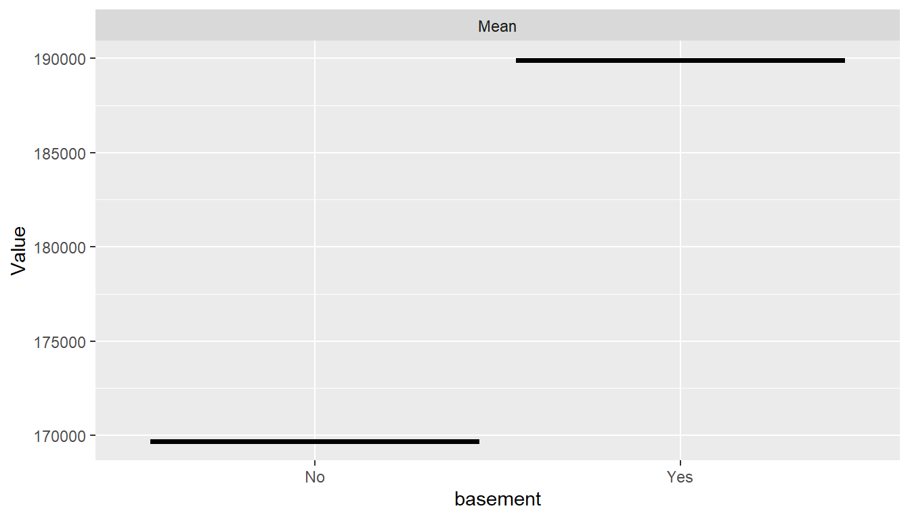
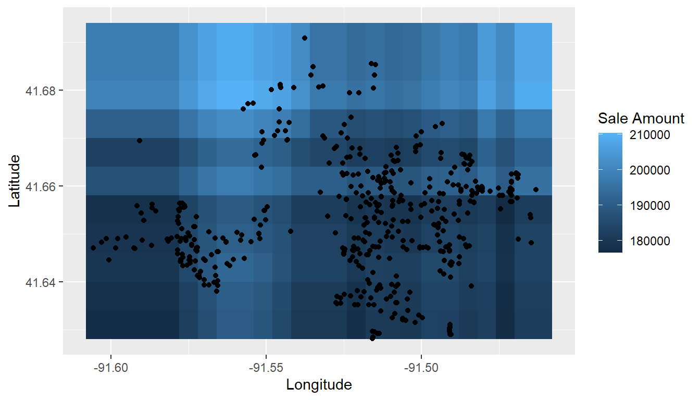

In this example, a generalized boosted model is developed to predict the prices of homes sold in Iowa City, IA during 2005-2008.
| Characteristic | Value |
|---|---|
| Number of homes | 753 |
| sale_amount | |
| Median (Range) | $158,000 ($38,250, $815,000) |
| sale_year | |
| Median (Range) | 2006 (2005, 2008) |
| sale_month | |
| Median (Range) | 6 (1, 12) |
| built | |
| Median (Range) | 1979 (1873, 2007) |
| style | |
| Home | 515 (68.39%) |
| Condo | 238 (31.61%) |
| construction | |
| 1 1/2 Story Frame | 25 (3.32%) |
| 1 Story Brick | 24 (3.19%) |
| 1 Story Condo | 45 (5.98%) |
| 1 Story Frame | 336 (44.62%) |
| 2 Story Brick | 10 (1.33%) |
| 2 Story Condo | 27 (3.59%) |
| 2 Story Frame | 180 (23.9%) |
| Split Foyer Frame | 76 (10.09%) |
| Split Level Frame | 30 (3.98%) |
| base_size (sq ft) | |
| Median (Range) | 933 (240, 3440) |
| garage1_size (sq ft) | |
| Median (Range) | 0 (0, 1065) |
| garage2_size (sq ft) | |
| Median (Range) | 0 (0, 856) |
| lot_size (sq ft) | |
| Median (Range) | 7592 (137, 158123) |
| bedrooms | |
| 1-2 | 249 (33.07%) |
| 3 | 280 (37.18%) |
| 4 | 168 (22.31%) |
| 5+ | 56 (7.44%) |
| basement | |
| Yes | 578 (76.76%) |
| No | 175 (23.24%) |
| ac | |
| Yes | 679 (90.17%) |
| No | 74 (9.83%) |
| attic | |
| Yes | 53 (7.04%) |
| No | 700 (92.96%) |
| lon | |
| Median (Range) | -91.5158 (-91.60575, -91.46307) |
| lat | |
| Median (Range) | 41.65263 (41.62804, 41.69092) |
## Analysis libraries
library(MachineShop)
library(ggplot2)
## Training and test sets
set.seed(123)
train_indices <- sample(nrow(ICHomes), nrow(ICHomes) * 2 / 3)
trainset <- ICHomes[train_indices, ]
testset <- ICHomes[-train_indices, ]
## Model formula
fo <- sale_amount ~ .
## Boosted regression model tuned with the training set
model_fit <- TunedModel(GBMModel, grid = 5) %>% fit(fo, data = trainset)
## Variable importance
vi <- varimp(model_fit)
plot(vi)
## Performance plotted over the grid points
(tuned_model <- as.MLModel(model_fit))
#> Object of class "MLModel"
#>
#> Model name: GBMModel
#> Label: Trained Generalized Boosted Regression
#> Package: gbm
#> Response types: factor, numeric, PoissonVariate, Surv
#> Tuning grid: TRUE
#> Variable importance: TRUE
#>
#> Parameters:
#> List of 5
#> $ n.trees : num 200
#> $ interaction.depth: int 5
#> $ n.minobsinnode : num 10
#> $ shrinkage : num 0.1
#> $ bag.fraction : num 0.5
#>
#> TrainStep1 :
#> Object of class "TrainStep"
#>
#> Grid (selected = 24):
#> # A tibble: 25 x 1
#> Model$n.trees $interaction.depth
#> <dbl> <int>
#> 1 50 1
#> 2 100 1
#> 3 150 1
#> 4 200 1
#> 5 250 1
#> 6 50 2
#> 7 100 2
#> 8 150 2
#> 9 200 2
#> 10 250 2
#> # ... with 15 more rows
#>
#> Object of class "Performance"
#>
#> Metrics: RMSE, R2, MAE
#> Models: GBMModel.1, GBMModel.2, GBMModel.3, GBMModel.4, GBMModel.5, GBMModel.6,
#> GBMModel.7, GBMModel.8, GBMModel.9, GBMModel.10... with 15 more
#>
#> Selected model: GBMModel.24
#> RMSE value: 44669.45
plot(tuned_model, type = "line")
#> $TrainStep1
## Test set observed and predicted sale amounts
obs <- response(model_fit, newdata = testset)
pred <- predict(model_fit, newdata = testset)
## Test set performance
performance(obs, pred)
#> RMSE R2 MAE
#> 4.590169e+04 7.100791e-01 2.673539e+04cal <- calibration(obs, pred, breaks = NULL)
plot(cal, se = TRUE)
## Marginal predictor effects
pd <- dependence(model_fit, select = c(base_size, built, basement))
plot(pd)
## Spatial distribution
pd <- dependence(model_fit, select = c(lon, lat), interaction = TRUE, n = 25)
df <- cbind(pd$Predictors, sale_amount = pd$Value)
ggplot(df) +
stat_summary_2d(aes(lon, lat, z = sale_amount), binwidth = 0.006) +
geom_point(aes(lon, lat), data = trainset) +
labs(x = "Longitude", y = "Latitude", fill = "Sale Amount")